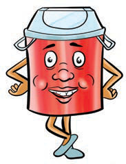
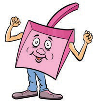

Questions
1. Name the items used for caring for the environment shown or described in pictures a-p.
2. What other items used for caring for the environment do you know?
Activity 2
Observe the following cartoons or listen to the words spoken by them, then boast about items for caring for the environment by mentioning their uses.
I am a dustbin, I store waste.

A smiling dustbin with arms and legs for keeping waste.
I am a dustpan, I collect dust and waste and take them to the dustbin.

A smiling dustpan with arms and legs for collecting dust and rubbish.